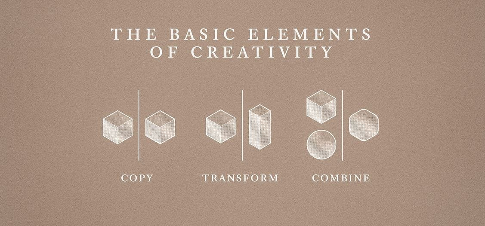

ConvComp2016: implementare un Bot di crowdsensing
Dopo aver discusso di Bot come autentiche piattaforme, al pari di applicazioni mobili o siti web, ed aver argomentato che un Bot non necessariamente debba fungere da fornitore di informazioni — ma può benissimo essere lo strumento per raccogliere dati e quindi essere parte di un meccanismo di intelligenza collettiva — è giunto il momento di metterci all’opera per realizzarne uno.
Come descritto precedentemente, per l’occasione dell’evento ConvComp2016 del 24 giugno, abbiamo realizzato un semplice Bot che permettesse di raccogliere pensieri, emozioni e stati d’animo geolocalizzati, in modo da dare un’idea del sentimento generale in un’area. Il Bot è online su Telegram come @wordcloud_bot ed è possibile utilizzarlo da subito per vederlo in azione.
Strumenti semplici ed aperti per realizzare il proprio Bot.
La semplicità e la rapidità con cui si sono diffusi le svariate piattaforme di messaggistica ed i loro Bot sono, in buona parte, il frutto di anni di software e livelli di astrazione che rendono, oggigiorno, la programmazione di un’applicazione o di un sistema di comunicazione sorprendentemente facile. Alla stessa maniera, l’esistenza di immani “spalle di giganti” su cui basarsi fa sì che — almeno per quanto riguarda l’implementazione di un semplice Bot — ci siano già tutti i pezzi LEGO di cui abbiamo bisogno e che combinarli per raggiungere il nostro risultato spesso possa anche essere divertente.
In questo esempio faremo uso del software che viene utilizzato come supporto didattico nel corso di “Piattaforme Digitali per la Gestione del Territorio” del Corso di Laurea in Informatica Applicata dell’Università di Urbino, che viene offerto anche come MOOC online sulla piattaforma EMMA. Il software in questione è disponibile liberamente anche su Github.
Quattro semplici pezzi LEGO per comporre un Bot.
La piattaforma di base per il nostro Bot è Telegram, che mette a disposizione un’interfaccia molto ricca per l’implementazione degli stessi. Una volta collegato con Telegram, la logica interna del Bot è implementata con uno script PHP, che sfrutta un database MySQL per memorizzare le informazioni fornite dagli utenti, la loro posizione geografica ed altri dati accessori.
Se finora le tecnologie utilizzate non mostrano particolare creatività — del resto sono le medesime su cui si basa la maggior parte dei siti web o blog degli ultimi anni — è nel rendere la conversazione del nostro Bot più credibile che possiamo sfruttare un ulteriore blocco “pronto all’uso”: Program O, un interprete basato sulle specifiche di ALICE e che permette di sviluppare velocemente dei Bot che conversano in maniera (più o meno) naturale sulla base di codice dichiarativo (una variante di XML).
La libreria d’esempio su Github mette a disposizione diverse funzioni già implementate per l’interazione con Telegram, MySQL e Program O.
Le potenzialità del remix: piattaforme, dati aperti, software libero…
Non finisce di certo qui. Riprendiamo il motto di “Everything is a Remix” per asserire che qualsiasi idea — piccola o grande che sia — e qualsiasi pezzo di software, che è possibile realizzare anche senza conoscenze di programmazione, può essere visto come il culmine di anni di astrazioni — i blocchetti del LEGO — a noi liberamente disponibili. Il prodotto dei tre fondamentali passi delineati qui sotto.

Piattaforme, dati aperti, software libero e tanti altri blocchi a portata di mano possono essere ricombinati a piacimento per creare innovazione, opportunità e conoscenza. Le interfacce conversazionali rappresentate dai Bot sono una di queste piattaforme.
Il codice di @wordcloud_bot è disponibile liberamente su Github sotto licenza MIT. Se vi viene in mente qualche brillante idea per un Bot — magari ispirato ai principi dell’intelligenza collettiva — siamo curiosi di sentirla!
Negli altri articoli dedicati al ConvComp2016 si parla di Bot come piattaforma e della loro implementazione.
Questo articolo è stato pubblicato originariamente sul blog del Corso di Laurea di Informatica Applicata presso l’Università degli Studi di Urbino.